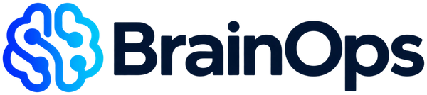
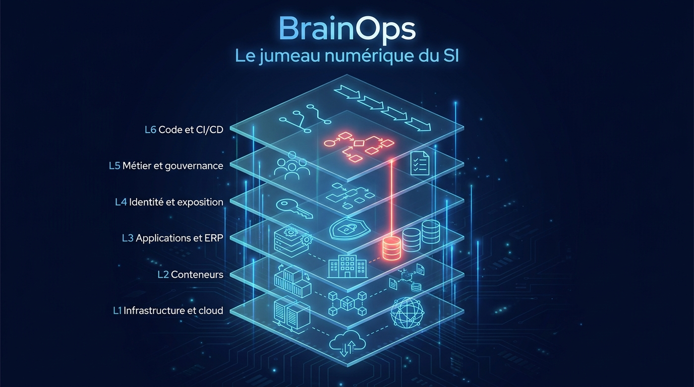
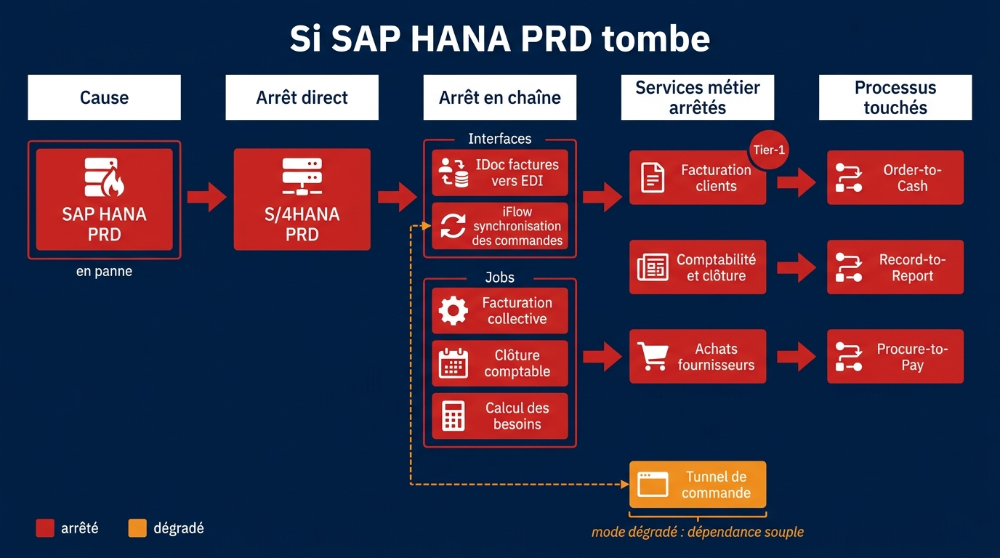
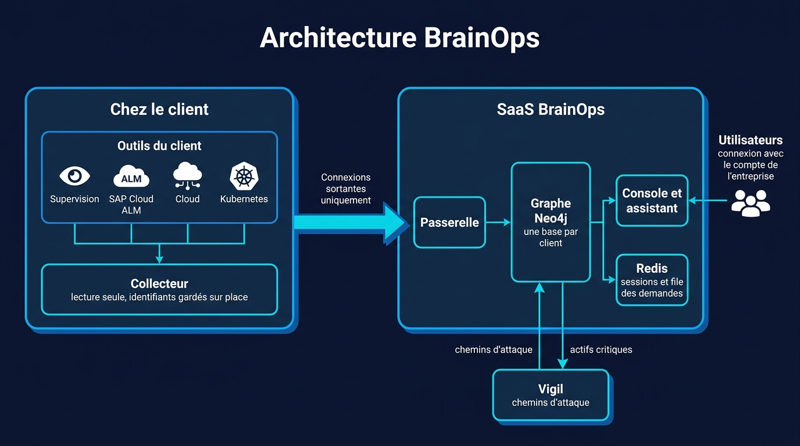

<title>BrainOps</title>
<link rel="preconnect" href="https://fonts.googleapis.com">
<link rel="preconnect" href="https://fonts.gstatic.com" crossorigin>
<link rel="stylesheet" href="https://fonts.googleapis.com/css2?family=Archivo:wdth,wght@112,600;112,800&family=IBM+Plex+Mono:wght@400;500&family=IBM+Plex+Sans:wght@400;500;600&display=swap">
<style>
/* Mise en page : une colonne éditoriale, chaque section part d'une question d'exploitation
   et y répond par une preuve (le chemin d'une panne, les couches, les écrans). */
:root {
  --bg: #0B1218;
  --surface: #121C24;
  --surface-2: #18252F;
  --ink: #E4EBF0;
  --muted: #94A3AF;
  --line: #22313C;
  --accent: #6DB6D1;
  --accent-ink: #0B1218;
  --crit: #EE7D7D;
  --warn: #E0A84E;
  --l1: #9AA8B5; --l2: #74B7C6; --l3: #7AB0E6; --l4: #A99BEA; --l5: #DE95B8; --l6: #D2B072;
  --f-display: "Archivo", "Arial Narrow", system-ui, sans-serif;
  --f-body: "IBM Plex Sans", system-ui, -apple-system, "Segoe UI", sans-serif;
  --f-mono: "IBM Plex Mono", ui-monospace, Consolas, monospace;
  color-scheme: dark;
}
@media (prefers-color-scheme: light) {
  :root:not([data-theme="dark"]) {
    --bg: #F3F5F7; --surface: #FFFFFF; --surface-2: #E9EEF2; --ink: #14202A; --muted: #55636F;
    --line: #D3DBE2; --accent: #1B6582; --accent-ink: #FFFFFF; --crit: #B23A3A; --warn: #A86A12;
    --l1: #5B6B7A; --l2: #3F7F8F; --l3: #2D6FAE; --l4: #6A5BB0; --l5: #A2577C; --l6: #8A6A2E;
    color-scheme: light;
  }
}
:root[data-theme="light"] {
  --bg: #F3F5F7; --surface: #FFFFFF; --surface-2: #E9EEF2; --ink: #14202A; --muted: #55636F;
  --line: #D3DBE2; --accent: #1B6582; --accent-ink: #FFFFFF; --crit: #B23A3A; --warn: #A86A12;
  --l1: #5B6B7A; --l2: #3F7F8F; --l3: #2D6FAE; --l4: #6A5BB0; --l5: #A2577C; --l6: #8A6A2E;
  color-scheme: light;
}

* { box-sizing: border-box; }
body { margin: 0; background: var(--bg); color: var(--ink); font: 17px/1.6 var(--f-body); }
.wrap { max-width: 1120px; margin: 0 auto; padding-inline: 24px; }
@media (max-width: 600px) { .wrap { padding-inline: 16px; } body { font-size: 16px; } }

h1, h2, h3 { font-family: var(--f-display); font-stretch: 112%; text-wrap: balance; margin: 0; letter-spacing: -0.01em; }
h1 { font-size: clamp(2.2rem, 5.4vw, 4rem); line-height: 1.04; font-weight: 800; }
h2 { font-size: clamp(1.6rem, 3.4vw, 2.4rem); line-height: 1.1; font-weight: 800; }
h3 { font-size: 1.15rem; font-weight: 600; line-height: 1.25; }
p { margin: 0; }
.lede { color: var(--muted); font-size: 1.1rem; max-width: 62ch; }
.eyebrow { font-family: var(--f-mono); font-size: .78rem; letter-spacing: .12em; text-transform: uppercase; color: var(--accent); }
a { color: var(--accent); }
a:focus-visible, button:focus-visible { outline: 2px solid var(--accent); outline-offset: 3px; border-radius: 4px; }
img { display: block; max-width: 100%; height: auto; }
.red { color: var(--crit); }

/* En-tête */
header.top { position: sticky; top: env(safe-area-inset-top, 0px); z-index: 10; background: color-mix(in srgb, var(--bg) 88%, transparent);
  backdrop-filter: blur(10px); border-bottom: 1px solid var(--line); }
.top .wrap { display: flex; align-items: center; gap: 24px; padding-block: 14px; }
.logo { height: 30px; width: auto; }
.logo-light { display: none; }
@media (prefers-color-scheme: light) { :root:not([data-theme="dark"]) .logo-light { display: block; } :root:not([data-theme="dark"]) .logo-dark { display: none; } }
:root[data-theme="light"] .logo-light { display: block; } :root[data-theme="light"] .logo-dark { display: none; }
nav.links { display: flex; gap: 22px; margin-left: auto; font-size: .95rem; }
nav.links a { color: var(--muted); text-decoration: none; }
nav.links a:hover { color: var(--ink); }
.btn { display: inline-flex; align-items: center; gap: 8px; padding: 11px 18px; border-radius: 6px; font: 600 .95rem/1 var(--f-body);
  text-decoration: none; border: 1px solid var(--accent); cursor: pointer; }
.btn.primary { background: var(--accent); color: var(--accent-ink); }
.btn.ghost { background: transparent; color: var(--ink); border-color: var(--line); }
.btn.primary:hover { filter: brightness(1.08); }
@media (max-width: 760px) { nav.links { display: none; } .top .btn { margin-left: auto; } }

section { padding-block: clamp(56px, 9vw, 104px); border-bottom: 1px solid var(--line); }
.section-head { display: grid; gap: 14px; margin-bottom: 40px; max-width: 760px; }

/* Héros : la question d'abord, l'image du jumeau ensuite */
.hero { padding-block: clamp(48px, 8vw, 88px) clamp(40px, 6vw, 72px); }
.hero-grid { display: grid; gap: 40px; }
.hero h1 .red { white-space: nowrap; }
.hero .lede { margin-top: 20px; }
.hero .actions { display: flex; flex-wrap: wrap; gap: 12px; margin-top: 30px; }
.hero figure { margin: 0; border: 1px solid var(--line); border-radius: 10px; overflow: hidden; }
.proof { display: flex; flex-wrap: wrap; gap: 10px 28px; margin-top: 28px; font-family: var(--f-mono); font-size: .82rem; color: var(--muted); }
.proof b { color: var(--ink); font-weight: 500; }

/* Problème : quatre outils, quatre angles morts */
.silos { display: grid; grid-template-columns: repeat(auto-fit, minmax(230px, 1fr)); gap: 1px; background: var(--line); border: 1px solid var(--line); border-radius: 10px; overflow: hidden; }
.silo { background: var(--surface); padding: 22px; display: grid; gap: 8px; align-content: start; }
.silo .knows { font-family: var(--f-mono); font-size: .8rem; color: var(--muted); }
.silo p { color: var(--muted); font-size: .95rem; }
.silo .gap { color: var(--ink); }

/* Exemple : la panne racontée étape par étape */
.case { display: grid; gap: 36px; }
.case figure { margin: 0; border-radius: 10px; overflow: hidden; border: 1px solid var(--line); }
.steps { list-style: none; margin: 0; padding: 0; display: grid; gap: 0; counter-reset: step; }
.steps li { display: grid; grid-template-columns: 2.4rem minmax(0, 1fr); gap: 14px; padding: 14px 0; border-top: 1px solid var(--line); counter-increment: step; }
.steps li::before { content: counter(step); font-family: var(--f-mono); color: var(--crit); font-size: .9rem; padding-top: 2px; }
.steps li.degraded::before { color: var(--warn); }
.steps b { font-weight: 600; }
.steps span { color: var(--muted); }
.footnote { margin-top: 18px; font-size: .9rem; color: var(--muted); }

/* Six couches : la signature visuelle, de L1 à L6 */
.layers { display: grid; gap: 8px; }
.layer { display: grid; grid-template-columns: 4.2rem minmax(0, 13rem) minmax(0, 1fr); gap: 18px; align-items: baseline;
  padding: 14px 18px; background: var(--surface); border-radius: 8px; border-left: 4px solid var(--c); }
.layer .code { font-family: var(--f-mono); font-weight: 500; color: var(--c); }
.layer h3 { font-size: 1rem; }
.layer p { color: var(--muted); font-size: .95rem; }
@media (max-width: 720px) { .layer { grid-template-columns: 3.2rem minmax(0, 1fr); } .layer p { grid-column: 2; } }

/* Écrans */
.screens { display: grid; grid-template-columns: repeat(auto-fit, minmax(300px, 1fr)); gap: 28px 40px; }
.screen { display: grid; gap: 8px; align-content: start; padding-top: 18px; border-top: 2px solid var(--line); }
.screen p { color: var(--muted); font-size: .97rem; }

/* SAP */
.split { display: grid; gap: 40px; align-items: start; }
@media (min-width: 900px) { .split { grid-template-columns: minmax(0, 1fr) minmax(0, 1fr); } }
.jobs { border: 1px solid var(--line); border-radius: 10px; overflow: hidden; background: var(--surface); }
.jobs .row { display: grid; grid-template-columns: minmax(0, 1fr) auto; gap: 6px 14px; padding: 14px 18px; border-top: 1px solid var(--line); }
.jobs .row:first-child { border-top: 0; }
.jobs .name { font-family: var(--f-mono); font-size: .88rem; overflow-wrap: anywhere; }
.jobs .detail { grid-column: 1 / -1; color: var(--muted); font-size: .9rem; }
.pill { font-family: var(--f-mono); font-size: .72rem; padding: 2px 9px; border-radius: 99px; border: 1px solid currentColor; white-space: nowrap; align-self: center; }
.pill.crit { color: var(--crit); } .pill.warn { color: var(--warn); } .pill.ok { color: var(--accent); }
.jobs-caption { font-family: var(--f-mono); font-size: .76rem; color: var(--muted); padding: 10px 18px; background: var(--surface-2); }
.checks { list-style: none; padding: 0; margin: 22px 0 0; display: grid; gap: 12px; }
.checks li { padding-left: 22px; position: relative; color: var(--muted); }
.checks li::before { content: ""; position: absolute; left: 0; top: .62em; width: 10px; height: 2px; background: var(--accent); }
.checks b { color: var(--ink); font-weight: 600; }

/* Confiance */
.trust { display: grid; grid-template-columns: repeat(auto-fit, minmax(240px, 1fr)); gap: 24px 36px; margin-top: 40px; }
.trust div { display: grid; gap: 6px; }
.trust p { color: var(--muted); font-size: .95rem; }
.wide-figure { margin: 0; border: 1px solid var(--line); border-radius: 10px; overflow: hidden; }

/* Vigil */
.ranking { border: 1px solid var(--line); border-radius: 10px; background: var(--surface); overflow-x: auto; }
.ranking table { width: 100%; border-collapse: collapse; font-size: .92rem; min-width: 560px; }
.ranking th, .ranking td { text-align: left; padding: 12px 16px; border-top: 1px solid var(--line); vertical-align: top; }
.ranking th { font-family: var(--f-mono); font-weight: 500; font-size: .74rem; letter-spacing: .08em; text-transform: uppercase; color: var(--muted); border-top: 0; }
.ranking td.num { font-family: var(--f-mono); font-variant-numeric: tabular-nums; white-space: nowrap; }
.ranking tr.top td { color: var(--ink); }
.ranking td span { color: var(--muted); }

/* Pour qui */
.audiences { display: grid; grid-template-columns: repeat(auto-fit, minmax(220px, 1fr)); gap: 24px 32px; }
.audiences div { display: grid; gap: 6px; }
.audiences p { color: var(--muted); font-size: .95rem; }

/* Pilote */
.pilot { border-bottom: 0; }
.pilot-box { display: grid; gap: 22px; padding: clamp(28px, 5vw, 48px); border-radius: 12px; background: var(--surface); border: 1px solid var(--line); }
.pilot-box ul { margin: 0; padding-left: 20px; color: var(--muted); display: grid; gap: 6px; }
.pilot-box .contact { display: flex; flex-wrap: wrap; align-items: center; gap: 12px 18px; color: var(--muted); }
.pilot-box .email { color: var(--ink); font-family: var(--f-mono); font-weight: 500; user-select: all; }
.status { font-size: .95rem; color: var(--muted); max-width: 70ch; }

footer { padding-block: 32px; color: var(--muted); font-size: .85rem; }
footer .wrap { display: flex; flex-wrap: wrap; gap: 12px 24px; justify-content: space-between; }

@media (prefers-reduced-motion: no-preference) {
  .hero h1, .hero .lede, .hero .actions { animation: rise .6s ease-out both; }
  .hero .lede { animation-delay: .08s; } .hero .actions { animation-delay: .16s; }
  @keyframes rise { from { transform: translateY(8px); } to { transform: none; } }
}
</style>

<header class="top">
  <div class="wrap">
    <a href="#haut" aria-label="BrainOps, haut de page">
      
      
    </a>
    <nav class="links" aria-label="Sections">
      <a href="#exemple">Exemple</a>
      <a href="#couches">Six couches</a>
      <a href="#sap">SAP</a>
      <a href="#confiance">Sécurité</a>
      <a href="#vigil">Vigil</a>
    </nav>
    <a class="btn primary" href="#pilote">Programme pilote</a>
  </div>
</header>

<main id="haut">
  <section class="hero">
    <div class="wrap hero-grid">
      <div>
        <p class="eyebrow">Le jumeau numérique du SI</p>
        <h1 style="margin-top:14px">Si votre ERP tombe, savez-vous <span class="red">ce qui s'arrête</span>&nbsp;?</h1>
        <p class="lede">BrainOps relie votre infrastructure, vos applications, SAP compris, vos identités et votre code à vos processus métier. Quand un composant tombe ou qu'une faille apparaît, vous voyez en une seconde quels services s'arrêtent, lesquels passent en mode dégradé, et pourquoi.</p>
        <div class="actions">
          <a class="btn primary" href="#pilote">Rejoindre le programme pilote</a>
          <a class="btn ghost" href="#exemple">Voir un exemple</a>
        </div>
        <p class="proof"><span><b>6</b> couches du SI reliées</span><span><b>165 000</b> entités en test de charge</span><span>chemin d'impact en <b>moins d'une seconde</b></span></p>
      </div>
      <figure>
        
      </figure>
    </div>
  </section>

  <section id="probleme">
    <div class="wrap">
      <div class="section-head">
        <p class="eyebrow">Le problème</p>
        <h2>Chaque outil voit une partie du SI. Aucun ne voit la chaîne jusqu'au métier.</h2>
        <p class="lede">Pendant un incident, il faut des heures et plusieurs équipes pour reconstituer ce qui dépend de quoi. En gestion de crise ou en audit de résilience, la même question revient sans réponse rapide.</p>
      </div>
      <div class="silos">
        <div class="silo"><h3>Supervision</h3><p class="knows">sait qu'un service est lent</p><p class="gap">ignore quels processus métier en dépendent</p></div>
        <div class="silo"><h3>CMDB</h3><p class="knows">décrit les applications déclarées</p><p class="gap">ignore ce qui tourne vraiment</p></div>
        <div class="silo"><h3>Sécurité</h3><p class="knows">connaît les vulnérabilités</p><p class="gap">ignore leur poids pour l'entreprise</p></div>
        <div class="silo"><h3>Code et déploiements</h3><p class="knows">sait ce qui a changé ce matin</p><p class="gap">ignore l'effet en production</p></div>
      </div>
    </div>
  </section>

  <section id="exemple">
    <div class="wrap">
      <div class="section-head">
        <p class="eyebrow">Un exemple</p>
        <h2>La base SAP HANA de production tombe. Voici ce que BrainOps vous montre.</h2>
      </div>
      <div class="case">
        <figure>
          
        </figure>
        <ol class="steps">
          <li><div><b>S/4HANA PRD s'arrête.</b> <span>Il dépend de HANA de façon bloquante.</span></div></li>
          <li><div><b>Ses interfaces s'arrêtent avec lui.</b> <span>L'IDoc des factures vers l'EDI, la synchronisation des commandes.</span></div></li>
          <li><div><b>Ses jobs ne tournent plus.</b> <span>Facturation collective, clôture comptable, calcul des besoins.</span></div></li>
          <li><div><b>Trois services métier sont arrêtés.</b> <span>Facturation clients (Tier-1), Comptabilité et clôture, Achats fournisseurs.</span></div></li>
          <li><div><b>Trois processus sont touchés.</b> <span>Order-to-Cash, Record-to-Report, Procure-to-Pay.</span></div></li>
          <li class="degraded"><div><b>Le tunnel de commande passe en mode dégradé.</b> <span>Il n'appelle SAP que de façon non bloquante : il continue de tourner.</span></div></li>
        </ol>
        <p class="footnote">Résultat calculé sur l'environnement de démonstration de BrainOps. Sur un graphe de 165 000 entités, le chemin d'impact s'affiche en moins d'une seconde.</p>
      </div>
    </div>
  </section>

  <section id="couches">
    <div class="wrap">
      <div class="section-head">
        <p class="eyebrow">Six couches, un seul graphe</p>
        <h2>Du code source jusqu'aux processus métier</h2>
        <p class="lede">Chaque relation est historisée : vous pouvez revoir l'état de votre SI à n'importe quel instant passé, et la santé de l'époque est relue dans vos outils de supervision.</p>
      </div>
      <div class="layers">
        <div class="layer" style="--c: var(--l6)"><span class="code">L6</span><h3>Code et CI/CD</h3><p>Dépôts, commits, pull requests, builds, pipelines, attestations</p></div>
        <div class="layer" style="--c: var(--l5)"><span class="code">L5</span><h3>Métier et gouvernance</h3><p>Processus, services métier, équipes, CMDB, incidents</p></div>
        <div class="layer" style="--c: var(--l4)"><span class="code">L4</span><h3>Identité et exposition</h3><p>Fournisseurs d'identité, groupes, chemins d'attaque</p></div>
        <div class="layer" style="--c: var(--l3)"><span class="code">L3</span><h3>Applications, ERP et SaaS</h3><p>Services, bases, systèmes SAP, interfaces, jobs, SaaS</p></div>
        <div class="layer" style="--c: var(--l2)"><span class="code">L2</span><h3>Conteneurs</h3><p>Nœuds, pods, déploiements, images, paquets, vulnérabilités</p></div>
        <div class="layer" style="--c: var(--l1)"><span class="code">L1</span><h3>Infrastructure et cloud</h3><p>Régions, zones, réseaux, comptes cloud, ressources facturées</p></div>
      </div>
    </div>
  </section>

  <section id="ecrans">
    <div class="wrap">
      <div class="section-head">
        <p class="eyebrow">Ce que voit votre équipe</p>
        <h2>Des écrans qui partent d'une question, pas d'une carte illisible</h2>
      </div>
      <div class="screens">
        <div class="screen"><h3>Salle de situation</h3><p>Les alertes classées par impact métier, les déploiements récents, les risques ouverts : vulnérabilités exposées, chemins d'attaque, points de défaillance unique.</p></div>
        <div class="screen"><h3>Carte métier</h3><p>Vos processus en colonnes, leurs services en tuiles colorées par santé, sécurité, changements ou criticité.</p></div>
        <div class="screen"><h3>Chemin d'impact</h3><p>La propagation d'une panne, de la cause au métier, avec les impacts les plus graves en tête.</p></div>
        <div class="screen"><h3>Curseur de temps</h3><p>Revoir n'importe quelle fiche telle qu'elle était au moment d'un incident, santé comprise.</p></div>
        <div class="screen"><h3>Simulation de crise</h3><p>Perte d'une région cloud, d'un fournisseur d'identité ou d'une interface : ce qui s'arrête, avant que ça arrive.</p></div>
        <div class="screen"><h3>Assistant</h3><p>Posez la question en langage naturel : l'assistant interroge le graphe, en lecture seule, et ouvre le bon écran.</p></div>
      </div>
    </div>
  </section>

  <section id="sap">
    <div class="wrap split">
      <div>
        <p class="eyebrow">SAP</p>
        <h2 style="margin-top:14px">SAP, traité comme le cœur de votre SI</h2>
        <p class="lede" style="margin-top:16px">BrainOps lit SAP Cloud ALM, l'outil d'exploitation déjà inclus dans le support SAP : systèmes, interfaces, jobs et alertes, sans agent dans vos systèmes SAP.</p>
        <ul class="checks">
          <li><b>Interfaces.</b> Chaque iFlow et chaque type d'IDoc, rattaché à ce qui l'exécute et jugé sur sa part de messages en erreur.</li>
          <li><b>Jobs.</b> Échecs, avertissements et durée anormale par rapport à l'habitude, sur 24 heures.</li>
          <li><b>Règles par job.</b> Une clôture a une échéance, une facturation se relance seule : vos équipes fixent les seuils de chaque traitement.</li>
        </ul>
      </div>
      <div class="jobs" aria-label="Exemple de jobs SAP surveillés">
        <div class="row"><span class="name">FI_PERIOD_CLOSE</span><span class="pill crit">En alerte</span><span class="detail">Durée 2 h 10 min en moyenne, au-delà de la limite de 2 h · Comptabilité et clôture</span></div>
        <div class="row"><span class="name">SD_BILLING_DUE_LIST</span><span class="pill warn">Dégradé</span><span class="detail">2 exécutions en échec sur 24, dans la tolérance de 2 · Facturation clients</span></div>
        <div class="row"><span class="name">MRP_LIVE_RUN</span><span class="pill warn">Dégradé</span><span class="detail">Avertissement applicatif · Achats fournisseurs</span></div>
        <div class="row"><span class="name">SAP_REORG_JOBS</span><span class="pill ok">Sain</span><span class="detail">Durée non surveillée, par règle</span></div>
        <div class="jobs-caption">Écran Jobs SAP, données de démonstration</div>
      </div>
    </div>
  </section>

  <section id="confiance">
    <div class="wrap">
      <div class="section-head">
        <p class="eyebrow">Sécurité et confiance</p>
        <h2>Vos identifiants et votre télémétrie restent chez vous</h2>
        <p class="lede">Un collecteur installé dans votre SI lit vos outils en lecture seule et ne pousse vers BrainOps que la structure du SI et un état de santé résumé.</p>
      </div>
      <figure class="wide-figure">
        
      </figure>
      <div class="trust">
        <div><h3>Aucun port entrant</h3><p>Toutes les connexions partent du collecteur. Rien à ouvrir dans votre pare-feu.</p></div>
        <div><h3>Lecture seule</h3><p>Le collecteur n'exécute que des lectures d'une liste blanche, avec des paramètres contrôlés.</p></div>
        <div><h3>Identifiants sur place</h3><p>Les accès à vos outils restent dans le collecteur. BrainOps ne les voit jamais.</p></div>
        <div><h3>Connexion d'entreprise</h3><p>Vos équipes se connectent avec leur compte Entra ID, Okta ou autre. Aucun mot de passe stocké, des rôles tirés de votre annuaire.</p></div>
      </div>
    </div>
  </section>

  <section id="vigil">
    <div class="wrap">
      <div class="section-head">
        <p class="eyebrow">Avec Vigil</p>
        <h2>Des chemins d'attaque classés par ce qu'ils menacent</h2>
        <p class="lede">Vigil calcule les chemins par lesquels un attaquant pourrait progresser dans vos configurations cloud et identité. BrainOps sait ce qui compte pour votre métier. Ensemble, ils classent chaque chemin par risque métier : sa probabilité de réussite multipliée par la gravité de l'impact.</p>
      </div>
      <div class="ranking">
        <table>
          <thead><tr><th>Chemin d'attaque</th><th>Probabilité</th><th>Ce qu'il atteint</th><th>Rang</th></tr></thead>
          <tbody>
            <tr class="top"><td>Frontal web exposé → base clients de production</td><td class="num">57 %</td><td>2 services Tier-1 <span>· paiement, tunnel de commande</span></td><td class="num">1</td></tr>
            <tr><td>Compte utilisateur hameçonnable → administrateur global</td><td class="num">86 %</td><td>1 service Tier-1</td><td class="num">2</td></tr>
          </tbody>
        </table>
      </div>
      <p class="footnote">Le chemin le plus probable n'est pas le plus grave. Exemple tiré de l'environnement de démonstration.</p>
    </div>
  </section>

  <section id="pour-qui">
    <div class="wrap">
      <div class="section-head">
        <p class="eyebrow">Pour qui</p>
        <h2>Pour celles et ceux qui répondent quand ça s'arrête</h2>
      </div>
      <div class="audiences">
        <div><h3>DSI et production</h3><p>Gestion d'incident, plans de continuité, audits de résilience.</p></div>
        <div><h3>RSSI</h3><p>Prioriser vulnérabilités et chemins d'attaque par leur poids métier.</p></div>
        <div><h3>Équipes SAP</h3><p>Interfaces, jobs et alertes, reliés aux processus qu'ils portent.</p></div>
        <div><h3>FinOps</h3><p>Ressources payées sans usage, SaaS utilisés sans être déclarés.</p></div>
      </div>
    </div>
  </section>

  <section id="pilote" class="pilot">
    <div class="wrap">
      <div class="pilot-box">
        <p class="eyebrow">Programme pilote</p>
        <h2>Nous cherchons trois à cinq entreprises pour un premier pilote</h2>
        <p class="status">BrainOps est en préparation de ses premiers pilotes. Le pilote porte sur votre SI réel : installation du collecteur, raccordement de vos outils de supervision et de SAP Cloud ALM, et construction avec vos équipes de la carte de vos services métier.</p>
        <ul>
          <li>un SI avec SAP ou une forte dépendance à un ERP</li>
          <li>Datadog ou SAP Cloud ALM déjà en place</li>
          <li>une équipe prête à valider la carte de ses processus métier</li>
        </ul>
        <div class="contact">
          <a class="btn primary" href="mailto:contact@brainops.tech?subject=Programme%20pilote%20BrainOps">Nous écrire</a>
          <span>ou à l'adresse <b class="email">contact@brainops.tech</b></span>
        </div>
      </div>
    </div>
  </section>
</main>

<footer>
  <div class="wrap">
    <span>BrainOps · Le jumeau numérique du SI</span>
    <span>Illustrations générées avec Nano Banana Pro</span>
  </div>
</footer>
